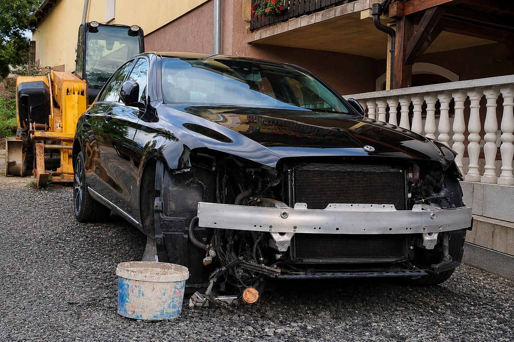
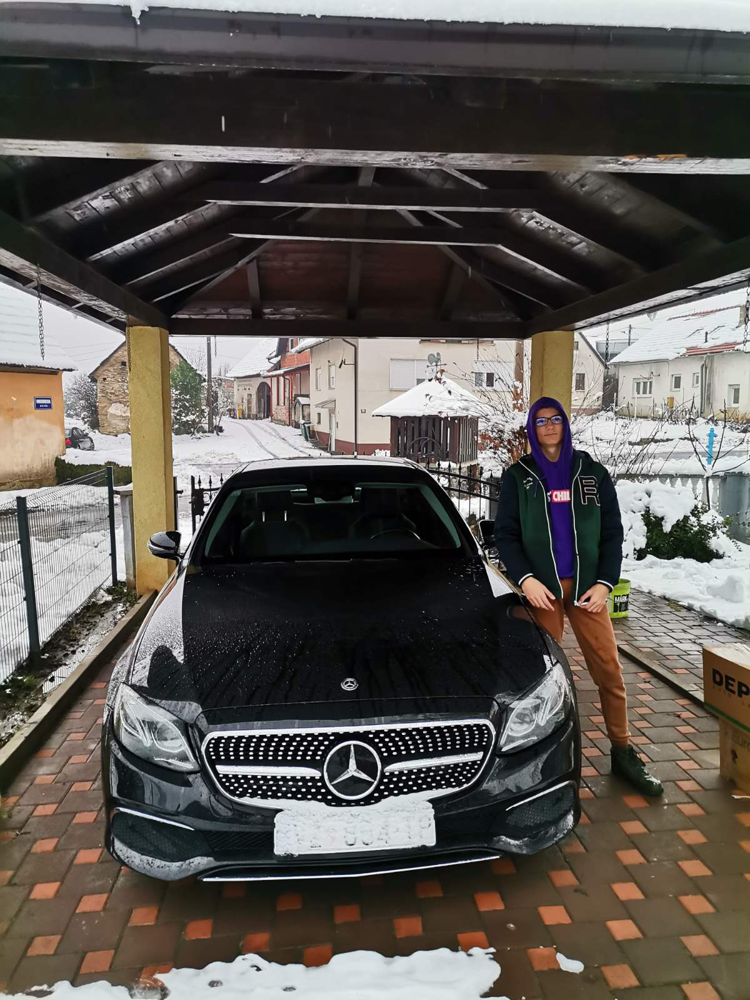
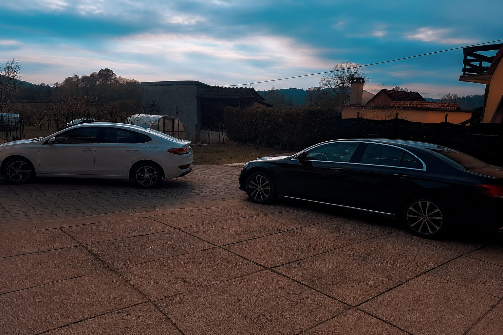

Popravak nakon prometne nesreće
Vozilo je bilo teško oštećeno nakon sudara. Nakon popravka vraćeno je u potpuno ispravno stanje uz obnovu karoserije i lakiranja.
Obnova • Servis • Restauracija


Vozilo je bilo teško oštećeno nakon sudara. Nakon popravka vraćeno je u potpuno ispravno stanje uz obnovu karoserije i lakiranja.


Zamijenjeni su oštećeni dijelovi te je vozilo ponovno vraćeno u tvorničko stanje.


Staro i oštećeno vozilo potpuno je obnovljeno te vraćeno u gotovo novo stanje.